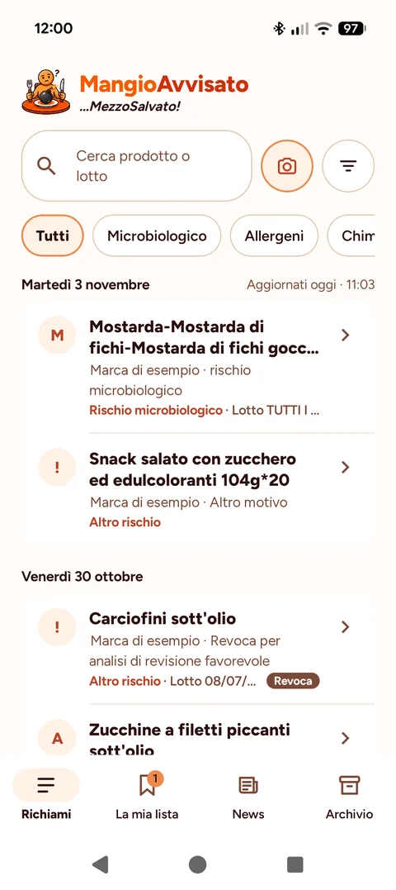
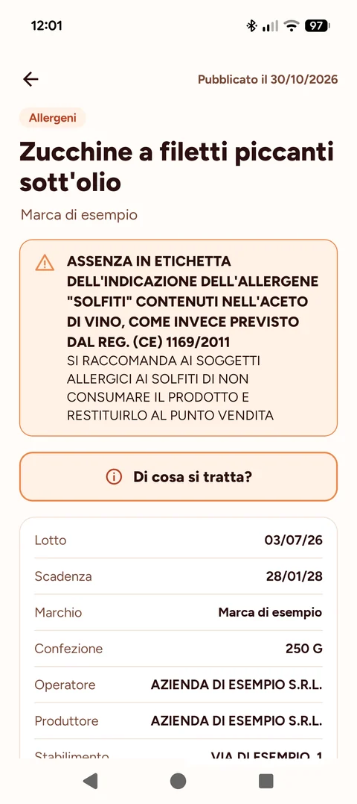
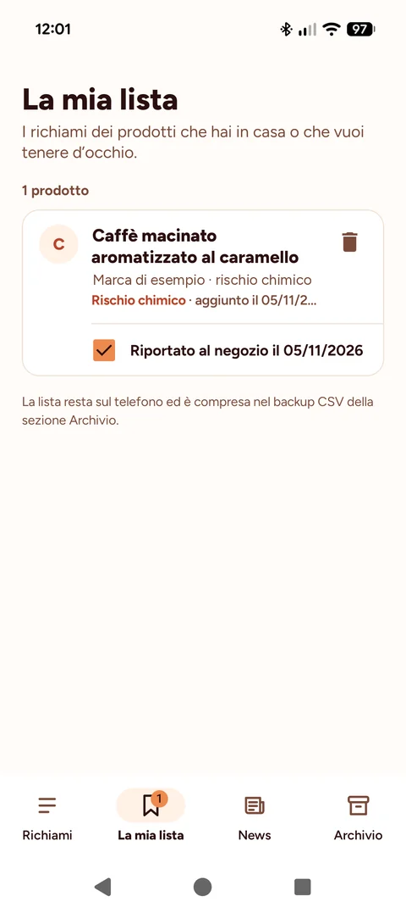

Cosa puoi fare con l'app

Sapere subito cosa è stato richiamato
Ricevi una notifica quando il Ministero pubblica un nuovo richiamo e consulta tutti quelli dal 2017 a oggi.
- Cerca per prodotto, marca o lotto.
- Filtra per periodo e tipo di rischio: microbiologico, allergeni, chimico, fisico.
- Vedi quando un richiamo è stato revocato.

Capire di cosa si tratta
Per ogni richiamo trovi i dati che servono per riconoscere il prodotto: lotti, scadenza, confezione, produttore e stabilimento, con il collegamento al documento ufficiale.
- «Di cosa si tratta?» spiega il rischio in parole semplici, con collegamenti a fonti come l'Istituto Superiore di Sanità.
- Condividi un richiamo con familiari e amici.

Controllare cosa hai in casa
Inquadra il lotto stampato sulla confezione: l'app lo confronta con i richiami e, se trova una corrispondenza, te lo dice subito.
- Salva i prodotti che ti riguardano nella tua lista.
- Ricevi un promemoria per riportarli al punto vendita.
Da dove arrivano i dati
I richiami provengono dal portale del Ministero della Salute, nella sezione dedicata ai richiami di prodotti alimentari da parte degli operatori, e vengono aggiornati più volte al giorno.
MangioAvvisato non è affiliata al Ministero della Salute né ad altri enti pubblici. Fa fede esclusivamente la pubblicazione sul sito del Ministero.
Gratuita, senza pubblicità
Nessuna registrazione, nessun tracciamento. La tua lista e le tue preferenze restano sul telefono, e la lettura del lotto con la fotocamera avviene interamente sul dispositivo.
Ti è utile?
MangioAvvisato è gratuita, senza pubblicità e lo resterà. Se ti è stata utile e vuoi contribuire al tempo che richiede tenerla aggiornata, puoi offrirmi un caffè.
Carta, Apple Pay, Google Pay o Satispay